Scheduling
Cuando hay múltiples cosas qué hacer ¿cómo se elige cuál de ellas hacer primero?
Debe existir algún mecanismo que permita determinar cuanto tiempo de CPU le toca a cada proceso. Ese período de tiempo que el kernel le otorga a un proceso se denomina time slice o time quantum. Esto sucede en los sistemas operativos de tipo Time Sharing..
Cuando un Sistema Operativo se dice que realiza multi-programación de varios procesos debe existir una entidad que se encargue de coordinar la forma en que estos se ejecutan, el momento en que estos se ejecutan y el momento en el cual paran de ejecutarse. En un sistema operativo esta tarea es realizada por el *Planificador o Scheduler que forma parte del Kernel del Sistema Operativo.
Números y el Workload
El Workload es carga de trabajo de un proceso corriendo en el sistema.
Determinar cómo se calcula el workload es fundamental para determinar partes de las políticas de planificación. Cuanto mejor es el cálculo, mejor es la política. Las suposiciones que se harán para el cálculo del workload son más que irreales.
Los supuestos sobre los procesos o jobs que se encuentran en ejecución son:
- Cada proceso se ejecuta la misma cantidad de tiempo.
- Todos los jobs llegan al mismo tiempo para ser ejecutados.
- Una vez que empieza un job sigue hasta completarse.
- Todos los jobs usan únicamente cpu.
- El tiempo de ejecución (run-time) de cada job es conocido.
Métricas de Planificación
Para poder hacer algún tipo de análisis se debe tener algún tipo de métrica estandarizada para comparar las distintas políticas de planificación o scheduling. Bajo estas premisas, por ahora, para que todo sea simple se utilizará una única métrica llamada turnaround time. Que se define como el tiempo en el cual el proceso se completa menos el tiempo de arribo al sistema:
Tturnaround= Tcompletion - Tarrival
Debido a 2 el Tarrival =0
Hay que notar que el turnaround time es una métrica que mide performance.
Políticas Para Sistemas Mono-procesador
Se estudiarán las políticas de planificación para un sistema que posea un solo procesador o CPU con un solo núcleo de procesamiento.
First In, First Out (FIFO)
El algoritmo más básico para implementar como política de planificaciones es el First In First Out o Fist Come, First Served. Ventajas:
- Es simple.
- Por 1 es fácil de implementar.
- Funciona bárbaro para las suposiciones iniciales.
Por ejemplo se tiene tres procesos A, B y C con Tarrival =0. Si bien llegan todos al mismo tiempo llegaron con un insignificante retraso de forma tal que llegó A, B y C. Si se asume que todos tardan 10 segundos en ejecutarse… ¿cuánto es el Tturnaround?
(10+20+30)/3 = 20
Esto puede apreciarse en la imagen :
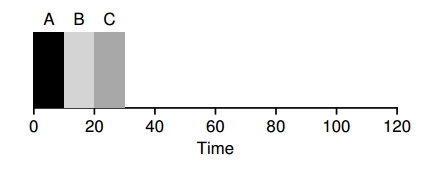
Ahora relajemos la suposición 1 y no se asume que todas las tareas duran el mismo tiempo. Ahora A dura 100 segundos. ¿Cúanto es el Tturnaround=?
(100+110+120)/3 = 110
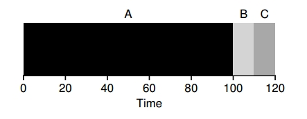
Segundos en promedio… un desastre esto se llama convoy effect.
Shortest Job First (SJF)
Para resolver el problema que se presenta en la política FIFO, se modifica la política para que se ejecute el proceso de duración mínima, una vez finalizado esto se ejecuta el proceso de duración mínima y así sucesivamente.
En el mismo caso de arriba, se mejora el turnaround time con el sencillo hecho de ejecutar B, C y A en ese orden:
(10+20+120)/3=50
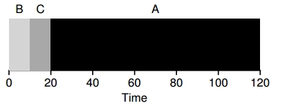
Utilizando SJF se obtuvo una significativa mejora… pero con las suposiciones iniciales que son muy poco realistas. Si se relaja la suposición 2, en la cual no todos los procesos llegan al mismo tiempo, por ejemplo llega el proceso A y a los 10 segundos llegan el proceso B y el proceso C. ¿Cómo seria el cálculo, ahora? t=10 seg
(100+110-10+120-10)/3=103.33
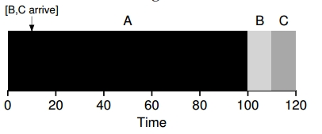
Shortest Time-to-Completion (STCF)
Para poder solucionar este problema se necesita relajar la suposición 3 (los procesos se tienen que terminar hasta el final). La idea es que el planificador o scheduler pueda adelantarse y determinar qué proceso debe ser ejecutado. Entonces cuando los procesos B y C llegan se puede desalojar (preempt 1) al proceso A y decidir que otro proceso se ejecute y luego retomar la ejecución del proceso A.
El caso anterior el de SFJ es una política non-preemptive
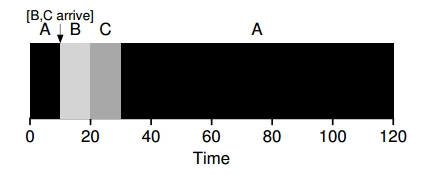
El cálculo para el turnaround time sería
(120-0+20-10+30-10)/3=50
Una nueva métrica: Tiempo de Respuesta
El tiempo de respuesta o response time surge con el advenimiento del time-sharing ya que los usuarios se sientan en una terminal de una computadora y pretenden una interacción con rapidez. Por eso nace el response time como métrica:
Tresponse= Tfirstrun - Tarrival
para entender la definición véase el caso anterior:
- El Tresponse del proceso A es 0.
- El Tresponse del proceso B es… 0… llega en 10 pero tarda 10 (10-10)
- El Tresponse del proceso C es… 10… llega en 10 pero termina en 20 (20-10)
En promedio el Tresponse es de 3.33 seg. Entonces ¿cómo escribir un planificador que tenga noción del tiempo de respuesta?
Round Robin (RR)
La idea del algoritmo es bastante simple, se ejecuta un proceso por un período determinado de tiempo (slice) y transcurrido el período se pasa a otro proceso, y así sucesivamente cambiando de proceso en la cola de ejecución Round Robin Paper.
Los procesos A, B y C llegan a ajecutarse en el mismo instante y tardan 5 segundos, si se utiliza SJF:
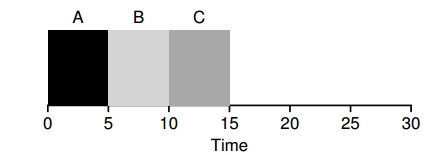
(0+5+10)/3=5
El tiempo de respuesta promedio sería 1 para RR con time slice de 1 seg:
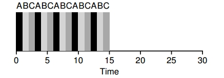
(0+1+2)/3=1
Lo importante de RR es la elección de un buen time slice, se dice que el time slice tiene que amortizar el cambio de contexto sin hacer que esto resulte en que el sistema no responda más.
Por ejemplo, si el tiempo de cambio de contexto está seteado en 1 ms y el time slice está seteado en 10 ms, el 10% del tiempo se estará utilizando para cambio de contexto.
Sin embargo, si el time slice se setea en 100 ms, solo el 1% del tiempo será dedicado al cambio de contexto. ¿Qué pasa si se trae a colación a la métrica del turnaround time ? Rpta:2
Que pasa cuando hay Entrada y salida de datos… Capitulo 7 del Arpachi y Capitulo 7 del Dahlin
La Planificación en la vida real
- ¿Qué debería proporcionar un marco de trabajo basico que permita pensar en políticas de planificaciones ?
- ¿Cuáles deberían ser las suposiciones a tener en cuenta?
- ¿Cuáles son las métricas importantes?
Multi-Level Feedback Queue (MLFQ)
Esta técnica llamada Multi-Level Feedbak Queue de planificación fue descripta inicialmente en los años 60 en un sistema conocido como Compatible Time Sharinkg System CTSS. Este trabajo en conjunto con el realizado sobre multics llevó a que su creador ganara el Turing Award.
Este planificador ha sido refinado con el paso del tiempo hasta llegar a las implementaciones que se encuentran hoy en un sistema moderno.
MLQF intenta atacar principalmente 2 problemas:
-
Intenta optimizar el turnaround time, que se realiza mediante la ejecución de la tarea mas corta primero, desafortunadamente el sistema operativo nunca sabe a priori cuanto va a tardar en correr una tarea.
-
MLQF intenta que el planificador haga sentir al sistema con un tiempo de respuesta interactivo para los usuarios por ende minimizar el response time; desafortunadamente los algoritmos como round-robin reducen el response time pero tienen un terrible turnaround time.
Entonces:
-
¿Cómo se hace para que un planificador pueda lograr estos dos objetivos si generalmente no se sabe nada sobre el proceso a priori?.
-
¿Cómo se planifica sin tener un conocimiento acabado?
-
¿Cómo se construye un planificador que minimice el tiempo de respuesta para las tareas interactivas y también minimice el timearound time sin un conocimiento a priori de cuanto dura la tarea?
MLQF: Las reglas básicas
MLFQ tiene un conjunto de distintas colas, cada una de estas colas tiene asignado un nivel de prioridad.
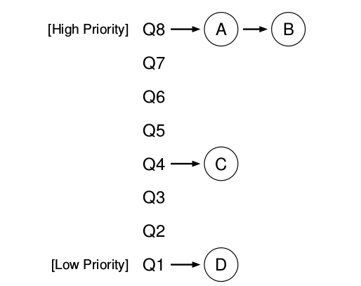
En un determinado tiempo, una tarea que esta lista para ser corrida esta en una única cola. MLFQ usa las prioridades para decidir que tarea debería correr en un determinado tiempo t0: la tarea con mayor prioridad o la tarea en la cola mas alta sera elegida para ser corrida.
Dado el caso que existan mas de una tarea con la misma prioridad entonces se utilizara el algoritmo de Round Robin para planificar estas tareas entre ellas.
Las 2 reglas básicas de MLFQ:
- REGLA 1: si la prioridad (A) es mayor que la prioridad de (B), (A) se ejecuta y (B) no.
- REGLA 2: si la prioridad de (A) es igual a la prioridad de (B), (A) y (B)se ejecutan en Round-Robin.
La clave para la planificación MLFQ subyace entonces en cómo el planificador setea las prioridades. En vez de dar una prioridad fija a cada tarea, MLFQ varia la prioridad de la tarea basándose en su comportamiento observado.
-
Por ejemplo, si una determinada tarea repetidamente no utiliza la CPU mientras espera que un dato sea ingresado por el teclado, MLFQ va a mantener su prioridad alta, así es como un proceso interactivo debería comportarse.
-
Si por lo contrario, una tarea usa intensivamente por largos periodos de tiempo la CPU, MLFQ reducirá su prioridad. De esta forma MLFQ va a aprender mientras los procesos se ejecutan y entonces va a usar la historia de esa tarea para predecir su futuro comportamiento
(Figura 181 ARPACI)
Obviamente que una fotografía sobre MLFQ no va a dar una idea de como este trabaja lo que se necesita es entender como la prioridad de una tarea varia a travez del tiempo.
##Primer intento: ¿Cómo cambiar la prioridad ?
Se debe decidir como MLFQ va a cambiarle el nivel de prioridad a una tarea durante toda la vida de la misma (por ende en que cola esta va a residir). Para hacer esto hay que tener en cuenta nuestra carga de trabajo (workload): una mezcla de tareas interactivas que tienen un corto tiempo de ejecución y que pueden renunciar a la utilización de la CPU y algunas tareas de larga ejecución basadas en la CPU que necesitan tiempo de CPU , pero poco tiempo de respuesta. A continuación e muestra un primer intento de algoritmo de ajuste de prioridades:
- REGLA 3: Cuando una tarea entra en el sistema se pone con la mas alta prioridad
- REGLA 4a: Si una tarea usa un time slice mientras se esta ejecutando su prioridad se reduce de una unidad (baja la cola una unidad menor)
- REGLA 4b: Si una tarea renuncia al uso de la CPU antes de un time slice completo se queda en el mismio nivel de prioridad.
Ejemplo 1: Una única tarea con ejecución larga.
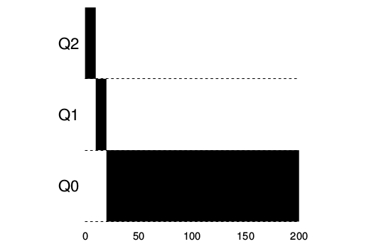
Ejemplo 2: Llega una tarea corta.
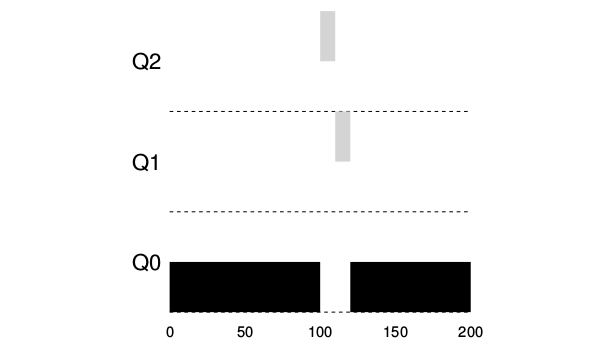
Existen 2 tareas, una de larga ejecución de CPU, A y B con una ejecución corta e interactiva. B tarda 20 milisengundos en ejecutarse. D e este ejemplo se puede ver una de las metas del algoritmo dado que no sabe si la tarea va a ser de corta o larga duración de ejecución, inicialmente asume que va a ser corta, entonces le da la mayor prioridad. Si realmente es una tarea corta se va a ejecutar rápidamente y va a terminar, si no lo es se moverá lentamente hacia abajo en las colas de prioridad haciéndose que se parezca mas a un proceso BATCH .
###Ejemplo 3: Que pasa con la entrada y salida.
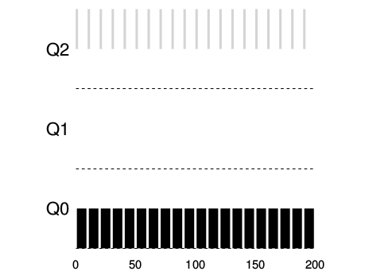
Como se considera en la regla 4 si la tarea renuncia al uso del procesador antes de un time slice se mantiene en el mismo nivel de prioridad. EL objetivo de esta regla es simple: si una tarea es interactiva por ejemplo entrada de datos por teclado o movimiento del mouse esta no va a requerir uso de CPU antes de que su time slice se complete en ese caso no sera penalizada y mantendrá su mismo nivel de prioridad.
PROBLEMA Con este Approach de FMLQ
-
Starvation : SI hay demasiadas tareas interactivas en el sistema se van a combinar para consumir todo el tiempo del CPU y las tareas de larga duración nunca se van a ejecutar.
-
Un usuario inteligente podría reescribir sus programas para obtener mas tiempo de CPU por ejemplo: Antes de que termine el time slice se realiza una operación de entrada y salida entonces se va a relegar el uso de CPU haciendo esto se va a mantener la tarea en la misma cola de prioridad. Entonces la tarea puede monopolizar toda el tiempo de CPU.
Segundo Approach
¿ Cómo mejorar la prioridad?
Para cambiar el problema del starvation y permitir que las tareas con larga utilización de CPU puedan progresar lo que se hace es aplicar una idea simple, se mejora la prioridad de todas las tareas en el sistema. Se agrega una nueva regla:
- Regla 5: Después de cierto periodo de tiempo S, se mueven las tareas a la cola con mas prioridad.
Haciendo esto se matan 2 pájaros de 1 tiro:
-
Se garantiza que los procesos no se van a starve: Al ubicarse en la cola tope con las otras tareas de alta prioridad estos se van a ejecutar utilizando round-robin y por ende en algún momento recibirá atención.
-
si un proceso que consume CPU se transforma en interactivo el planificador lo tratara como tal una vez que haya recibido el boost de prioridad.
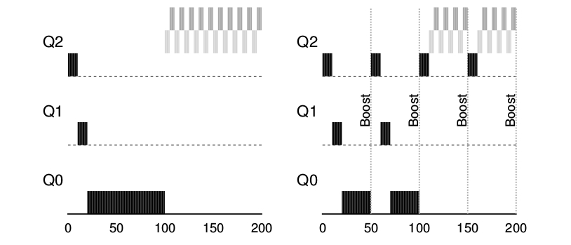
Obviamente el agregado del periodo de tiempo S va a desembocar en la pregunta obvia: Cuanto debería ser el valor del tiempo S. Algunos investigadores suelen llamar a este tipo de valores dentro de un sistema VOO-DOO CONSTANTs porque parece que requieren cierta magia negra para ser determinados correctamente.
Este es el caso de S, si el valor es demasiado alto,los procesos que requieren mucha ejecución van a caer en starvation; si se setea a S con valores muy pequeños las tareas interactivas no van a poder compartir adecuadamente la CPU.
INTENTO 3 : Llevar mejor la contabilidad
Se debe solucionar otro problema: Como prevenir que ventajeen (gaming) al planificador.
La solución es llevar una mejor contabilidad del tiempo de uso de la CPU en todos los niveles del MLFQ.
En lugar de que el planificador se olvide de cuanto time slice un determinado proceso utiliza en un determinado nivel el planificador debe seguir la pista desde que un proceso ha sido asignado a una cola hasta que es trasladado a una cola de distinta prioridad. Ya sea si usa su time slice de una o en pequeños trocitos, esto no importa por ende se reescriben las reglas 4a y 4b en una única regla:
- Regla 4: Una vez que una tarea usa su asignación de tiempo en un nivel dado (independientemente de cuantas veces haya renunciado al uso de la CPU) su prioridad se reduce: ( Por ejemplo baja un nivel en la cola de prioridad)
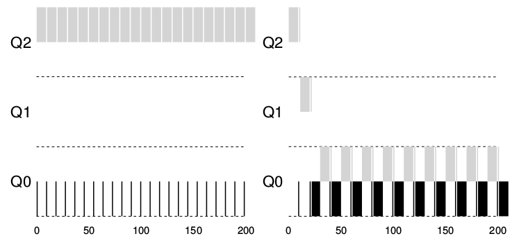
Resumen:
Se vio la técnica de planificación conocida como multi-level feed back qeeue (MLFQ). Se puede ver porque es llamado así, tiene un conjunto de colas de multiniveles y utiliza feed back para determinar la prioridad de una tarea dada. La historia es su guía: Poner atención como las tareas se comportas a través del tiempo y tratarlas de acuerdo a ello. Las reglas que se utilizan son:
- REGLA 1: si la prioridad (A) es mayor que la prioridad de (B), (A) se ejecuta y (B) no.
- REGLA 2: si la prioridad de (A) es igual a la prioridad de (B), (A) y (B)se ejecutan en Round-Robin.
- REGLA 3: Cuando una tarea entra en el sistema se pone con la mas alta prioridad
- Regla 4: Una vez que una tarea usa su asignación de tiempo en un nivel dado (independientemente de cuantas veces haya renunciado al uso de la CPU) su prioridad se reduce: ( Por ejemplo baja un nivel en la cola de prioridad).
- Regla 5: Después de cierto periodo de tiempo S, se mueven las tareas a la cola con mas prioridad.
Planificación: Proportional Share
Existen otros tipos de algoritmos de planificación que utilizan diferentes mecanismos para realizar esta tarea. Por ejemplo el mecanismo de llamado Proportional-Share, algunas veces también conocido como fair-share. Este se basa en un concepto muy simple: En vez de optimizar el turnaround o el response time el planificador en su lugar intentara garantizar que cada tarea obtenga cierto porcentaje de tiempo de CPU.
El concepto también es conocido como planificación por lotería la idea básica es muy sencilla: cada tanto se realiza un sorteo para determinar que proceso tiene que ejecutarse a continuación, por ende los procesos que deban ejecutarse con mas frecuencia tiene que tener mas posibilidades de ganar la lotería.
El concepto:
El concepto que subyace en el algoritmo de planificación por lotería es muy básico: los boletos, son utilizados para representar cuanto se comparte de un determinado recurso para un determinado proceso. El porcentaje de los boletos que un proceso tiene es el porcentaje de cuanto va a compartir el recurso en cuestión.
Por ejemplo:
Suponiendo que existen dos procesos A y B y que un boleto ganador esta entre 0 y 99 podría suponerse que el proceso A tiene el 75 % de posibilidades de recibir el recurso y el proceso B tiene el 25 % restante.
En términos de boletos de la lotería el proceso A tendría los boletos del 0 al 74 y el proceso B tendría los boletos del 75 al 99. UN boleto ganador determina si A o B son ejecutados, entonces el planificador. Entonces por ejemplo de boletos ganadores de la lotería podrían ser:
63 85 70 39 76 17 29 41 36 39 10 99 68 83 63 62 43 0 49 49
Entonces el resultado de la planificación seria:
A A A A A A A A A A A A A A A
B B B B
Utilizar la aleatoriedad lleva a una correcta visión desde el punto de vista probabilistico pero no garantiza que esa proporcion deseada se lleve a cabo. De hecho en el ejemplo anterior no sucede que se ejecute 25 75. ##El mecanismo de los boletos como si estuviéramos en Argentina en un sistema operativo hay ciertos mecanismos para manipular los boletos de la loteria de forma diferente y con cierta utilidad.
- Ticket Currency: Existen como en la realidad distintos tipos de moneda y las tareas pueden tener los tickets comprados con distintos valores de moneda; el sistema automáticamente los transforma en un tipo global de moneda
User A -> 500(A ś currensy) to A1 -> 50 ( global currency) -> 500(A ś currensy) to A2 -> 50 ( global currency) User B -> 10(B ś currensy) to B1 -> 100 ( global currency)
-
Transferencia de boletos: Este mecanismo permite que un proceso temporalmente trasnfiera sus boletos a otro proceso. Este mecanismo es util cuando se esta utilizando la arquitectura cliente/servidor.
-
Inflación: En argentina estamos acostumbrados a este mecanismo y es casi inútil explicarlo pero por las dudas lo esclareceremos. Con la inflación un proceso puede aumentar o disminuir la cantidad de boletos que posee esto lo puede hacer de forma temporal. Este proceso obviamente no puede realizarse en un sistema en el cual las tareas compiten entre ellas, ya que una tarea muy avara podría captar todos los boletos. Sin embargo, este método puede ser utilizado en un ambiente en el cual los procesos confían entre ellos.
La Implementación
Probablemente lo mas interesante de este método es su facilidad para implementar. Todo lo que se necesita es un buen generador de numeros aleatorios que determine cual es el numero de la lotería ganador, una estructura de datos para mantener la informacion de los procesos del sistema y finalmente un numero total de tickets.
En definitiva para tomar una decisión de planificación, se debe sortear un boleto; cuando se tiene el numero ganador se recorre la lista de procesos en busca del proceso que tenga ese numero.
// counter: used to track if we’ve found the winner yet
int counter = 0;
// winner: use some call to a random number generator to
get a value, between 0 and the total # of tickets
int winner = getrandom(0, totaltickets);
// current: use this to walk through the list of jobs
node_t *current = head;
// loop until the sum of ticket values is > the winner
while (current) {
counter = counter + current->tickets;
if (counter > winner)
break; // found the winner
current = current->next;
}
// ’current’ is the winner: schedule it...
Planificación Avanzada: Planificación multiprocesador
En los últimos años los sistemas multi-procesadores han ido creciendo en los lugares comunes de la informática como por ejemplo en las computadores desktop, laptops y dispositivos móviles. El advenimiento de los procesadores multi-núcleo, en los cuales múltiples núcleos de CPU están empaquetados en un único chip, en nuestros días esa arquitectura esta en plena proliferación. Este tipo de arquitectura de procesadores se volvió popular debido a que es complicado construir CPU cada vez mas rápidas y que a su vez las mismas no se fundan por el calor producido por la potencia que consumen.
Por supuesto que tener muchos procesadores en un único chip conlleva un conjunto de dificultades:
- Una aplicación típica por ejemplo un programa escrito en C usa únicamente una CPU:
- por lo cual agregar mas CPU no implica que la aplicación corra de forma mas rápida. El remedio a este problema es la necesidad de escribir aplicaciones que corran en paralelo, por ejemplo usando threads.
- Las aplicaciones multithreads pueden diseminar el trabajo a lo largo de múltiples CPUs y por ende correr mas rápido cuantas mas CPU hayan.
Mas allá de las aplicaciones sale a la luz una nueva problemática que es la planificación en multiprocesadores.
La arquitectura multiprocesador.
Para poder entender cuales son los problemas que atañan a la planificación multiprocesador en primer lugar hay que entender cual es la diferencia fundamental entre hardware monoprocesador y hardware multi-procesador.
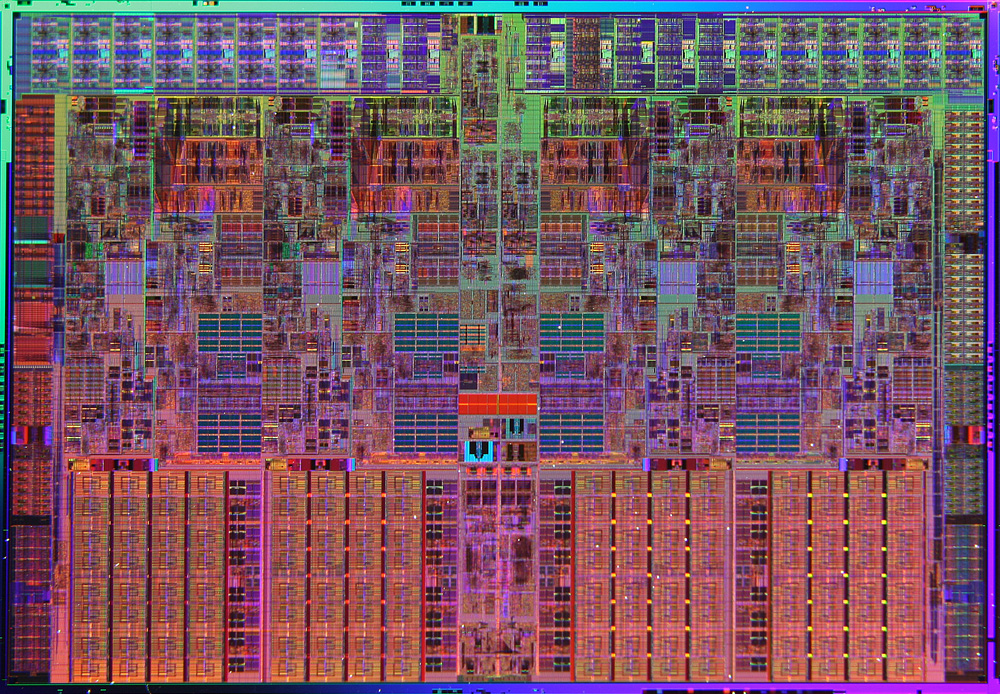
La diferencia se centra básicamente alrededor de un tipo de hardware llamado cache,y de que forma exactamente los datos en la cache son compartidos a través de los multiprocesadores.
En un sistema con único CPU hay una jerarquía de el hardware de cache que generalmente ayuda al procesador a correr los programas mas rápidamente. Las cache son pequeñas y rápidas memorias que (generalmente) mantienen copias de datos que son comúnmente utilizados que se encuentran en la memoria principal del sistema.
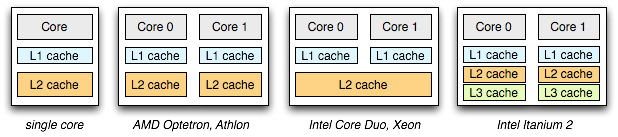
La memoria principal, por el contrario mantienen todos los datos del sistema pero el acceso a los mismos es lento. A través de mantener los datos que son frecuentemente utilizados en la cache, el sistema puede hacer que una memoria larga y lenta parezca una memoria rápida.
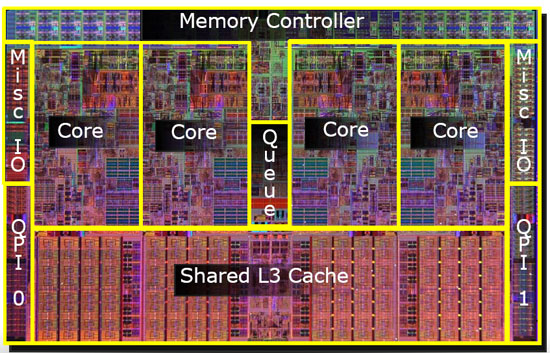
Como ejemplo, se puede considerar un programa que le diga implícitamente a una instrucción e ir a buscar un determinado valor de la memoria, si se tiene un sistema con una única CPU, con un pequeño cache de 64 Kb y una memoria principal muy larga:
-
La primera vez que se realice la carga, los datos estarán reduciendo en la memoria principal, y esto por lo tanto llevara un largo tiempo de fetch ( probablemente unos días nanosegundos o incluso unos cientos de nano segundos).
-
EL procesador, anticipando que esos datos podrían ser reutilizados, pone una copia de los datos cargados en el cache de la CPU.
-
Si el programa requiere el mismo conjunto de datos otra vez, la CPU en primer lugar los va a ir a buscar al cache; si los encuentra ahí los datos son llevados a la CPU mucho mas rápidamente( probablemente en unos pocos nanosegundos), entonces el programa parecerá ejecutarse mas rápidamente.
Esquema del funcionamiento de la cache.
{kind=link}
Entonces las cache se basan en la noción de localidad, de la cual hay dos tipos: localidad temporal y localidad espacial.
-
La idea detrás de la localidad temporal es que cuando cierta cantidad de datos son accedidos, es muy probable que sean accedidos otra vez ne un futuro cercano; imaginar por ejemplo variables o instrucciones que se ejecutan una y otra vez en un ciclo.
-
La idea detrás de la localidad espacial se basa en que un programa que accede a una dirección X es muy probable que necesite volver a acceder cerca de X. Acá podría pensarse en un programa sobre un arreglo. Teniendo en cuenta que este tipo de localidad existe en la mayoría de los programas los sistemas de hardware pueden hacer buen uso de las cache.
-
El codigo fuente escrito por los humanos tiene ambos tipos de localidades:
for(i = 0; i < 20; i++)
for(j = 0; j < 10; j++)
a[i] = a[i]*j;
La localidad temporal se refiere a cuando la misma posición de memoria es referenciada por muchas veces en un lapso de tiempo muy corto. Por ejemplo, en el código de arriba a[i] es referenciada frecuentemente en el ámbito del ciclo en a[i] = a[i] * 2 o a[i] = a[i] * 3. Dentro del mismo ámbito, se puede decir que i y j tiene localidad temporal.
La localidad espacial tiene que ver con la referencia de variables que están en posiciones contiguas de memoria a[0] y a[1] por ejemplo.
¿Que sucede cuando múltiples procesadores en un único sistema tiene que compartir una única memoria principal?
Como se verá el cacheo con múltiples CPU es mucho mas complicado. Imaginarse, por ejemplo, que un programa que se esta ejecutando en la CPU1 lee un dato cuyo valor es D en la dirección de memoria A:
- Debido a su este dato no esta cacheado en la CPU1, el sistema lo trae de la memoria principal y toma este valor D.
- El programa entonces modifica el valor en la dirección A, esto se realiza actualizando su valor D1; dado que escribir los datos directamente en la memoria principal es muy lento, el sistema habitualmente lo deja para mas tarde.
- Entonces se asume que el OS decide parar de ejecutar un programa y mover este programa a la CPU 2.
- EL programa entonces vuelve a ejecutarse en la CPU 2 y relee el valor en la dirección A; porque no existe tal valor en la cache de la CPU2, entonces el sistema trae el valor de memoria desde la memoria principal y obtiene el viejo valor D rn vez del correcto valor D prima. OOPS!.
Este problema es generalmente llamado coherencia del cache, existe muchísima bibliográfica que describe las diferentes sutilezas en solucionar este tipo de problemas que en este curso no se verán.
La solución básica que el hardware provee es mediante la monitorizacion de los accesos a memoria, el harware se asegura básicamente que las cosas pasen bien y que la vista de una única memoria compartida sea preservada. Una forma de hacer esto en un sistema basa en Bus, usando una vieja técnica llamada Bus Snooping:
- Cada cache pone atención en las actualizaciones de memoria mediante la observación del bus que esta conectado a ellos y a la memoria principal. Cuando una CPU entonces ve que se actualizo un dato que esta mantenido en su propio cache esta se va a dar cuenta de tal cambio y va a invalidar su copia (por ejemplo sacándola de su propio cache) o lo actualiza (por ejemplo poniendo el nuevo valor en su cache)
Existen otros métodos mas complicados de hacer esto.
Dado que la cache hace todo el trabajo para mantener la coherencia del sistema, tienen que los programas preocuparse de algo cuando acceden a memoria compartida? La respuesta es desafortunadamente si y se vera en el capitulo de concurrencia.
Un último tema: Afinidad de Cache.
El último tema a tener en cuenta cuando se arma un planificador con multiprocesadores con cache, es conocida como la afinidad de cache o cache affinity.
El concepto es basico:
- Cuando un proceso corre sobre una CPU en particular va construyendo un cachito del estado de si mismo en las cache de esa CPU
- Entonces la próxima vez que el proceso se ejecute seria bastante interesante que se ejecutara en la misma CPU, ya que se va a ejecutar mas rápido si parte de su estado esta en esa CPU.
- Si, en cambio se ejecuta el proceso en una CPU diferente cada vez, el rendimiento del proceso va a ser peor, ya que tendrá que volver a cargar su estado o parte del mismo cada vez que se ejecute.
Por ende un planificador multiprocesador debería considerar la afinidad de cache cuando toma sus decisiones de planificación, tal vez prefiriendo mantener a un proceso en un determinado CPU si es posible.
Planificación de cola única
La forma mas fácil para tener un planificador para un sistema multiprocesador es la de reutilizar el marco de trabajo básico para un planificador de monoprocesador.
Entonces se ponen todos los trabajos que tienen que ser planificados en una única cola, que se llamara SINGLE QUEUE MULTIPROCESSOR SCHEDULING o SQMS.
Esta forma de plantear la planificación tiene la ventaja de la simplicidad ya que no requiere mucho trabajo tomar la política existente que agarra la mejor tarea y la pone a ejecutar y adaptarla para que trabaje con mas de una CPU. sin embargo, SQMS tiene sus limitaciones:
-
No es escalable
-
Para asegurarse que la planificación trabaje correctamente en una arquitectura de múltiple CPU los desarrolladores tienen que insertar algún tipo de bloqueo en su código fuente. Es decir el bloqueo tiene que asegurar que cuando SQMS accede a una única cola (como para encontrar la próxima tarea a ejecutar), un resultado correcto se ha obtenido. EL bloqueo desafortunadamente va a reducir en mucho la performance particularmente a medida que el numero de CPU del sistema empiece a crecer. Téngase en cuenta que con un único bloqueo, el sistema pierde mas tiempo sobrecargándose en el bloqueo y menos tiempo en lo que debería estar haciendo.
-
Otro gran problema de SQMS es la afinidad del cache. Por ejemplo, si se asume que se tienen 5 tareas ( A, B, C, D )y 4 procesadores entonces la cola de planificación se vería de esta forma:
A lo largo del tiempo, asumiendo que cada trabajo se ejecuta en un determina time slice otro trabajo es elegido para ser ejecutado y entonces un posible esquema de planificación a través de la CPU podría ser:
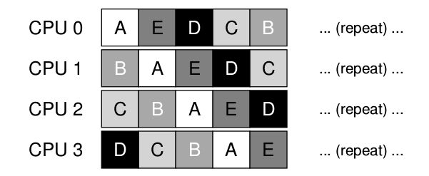
Teniendo en cuenta que cada CPU va a agarrar el próximo trabajo a ser ejecutado de la cola global compartida, cada tarea va a terminar saltando de CPU en CPU, haciendo exactamente lo opuesto de lo que recomienda la afinidad de cache mas bien que los procesos continúen ejecutándose en la misma CPU si es posible. EN algunos casos se podría proveer a ciertas tareas con cierta afinidad y a otras dejarlas cambiando de CPU para balancear la carga por ejemplo mirar:
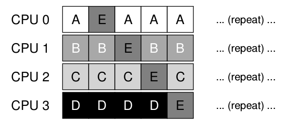
Multi-Queue Planificacion
Debido a los problemas que tiene single queue scheduler varia gente opto por crear un planificador multi queue que se llama MULTI-QUEUE MULTIPROCESSOR SHCHEDULING en MQMS.
- El esquema básico de la planificación consiste en múltiples colas. Cada cola va a seguir una determinada disciplina de planificación, por ejemplo, round robin, cuando una tarea entra en el sistema ésta se coloca exactamente en una única cola de planificación, de acuerdo con alguna heuristica. Esto implica que es esencialmente planificada en forma independiente.
Por ejemplo, Si se asume que se está trbajando con un sistema de dos procesadores ( CPU0 y CPU1) y una determinada cantidad de tareas ingresan al sistema ( A, B, C y D , por ejemplo). Dado que cada CPU tiene exactamente 2 colas, el planificador podria decidir distribuir las tareas de la siguiente forma:
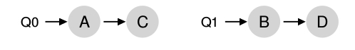
Dependiendo de la política de planificación por ejemplo Round Robin, la planificación a lo largo del tiempo podría verse así :
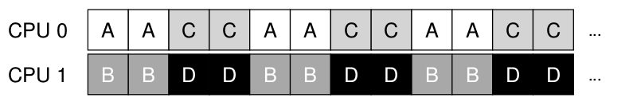
-
MQMS tiene la ventaja sobre SQMS debido a que es enteramente escalable. A medida que las CPU van creciendo también lo hacen las colas, lo que conlleva a que los lock y las cache no sean ya un problema.
-
MQMS intrisecamente prvee afinidad de cache, es decir las tareas intentan mantenerse en la CPU en la que fueron planificadas.
El único problema de MQSM es el load imbalance. El load imbalance se dá cuando una CPU queda osciosa frente a las demas que estan sobrecargadas. por ejemplo, si se asume que se esta en el mismo ecenario que en el ejemplo anterior 2 CPUs 4 tareas, pero una de las tareas, por ejemplo la C termina :
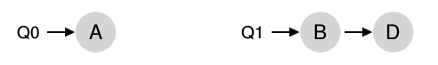
la politica de Round Robin resultaria :
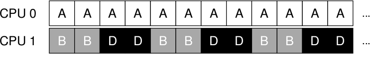
Como puede verse en el diagrama , A tendria el doble de uso de CPU que B y D.
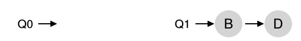
Un caso que sería aún pero es que también A termine, lo que conllevaría a que la CPU0 estuviera osciosa
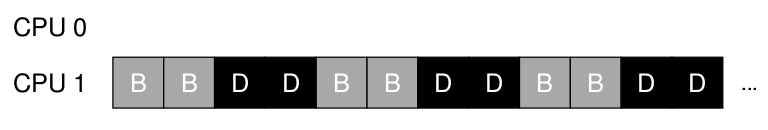
La pregunta que se plantea es ¿Cómo se resuelve el problema del load imbalance?
La respuesta más obvia es aquella de mover las tareas de un lado a otro, esta técnica se conoce como migración o migration. Mediante la migración de una tarea a otra cpu se puede conseguir un verdadero balance de carga.
Otra vez se considera la situación donde una CPU esta ociosa y la otra tiene algunas tareas:
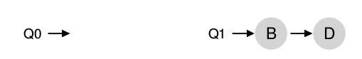
En este caso la migración deseada es fácil de comprender: se debería mover la tarea B o D a la CPU0. con un resultado win-win.
Una situación un poco más complicada seria en el caso en que A fue dejada sola en la CPU0. Para esta situación la migración de una sola tarea no serviría de nada. La idea es que las tres tareas migren por las dos CPUs quedado un esquema como el siguiente:
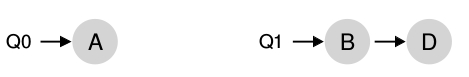
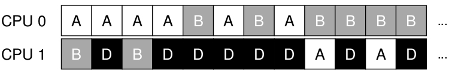
-
to do or say something before someone else does, especially to prevent them doing or saying what they had planned or to prevent their action being effective: The group raised its offer in an attempt to pre-empt a possible counterbid from a rival. ↩
-
A termina en 13, B termina en 14 y C termina en 15 turnaround time promedio 14. ↩